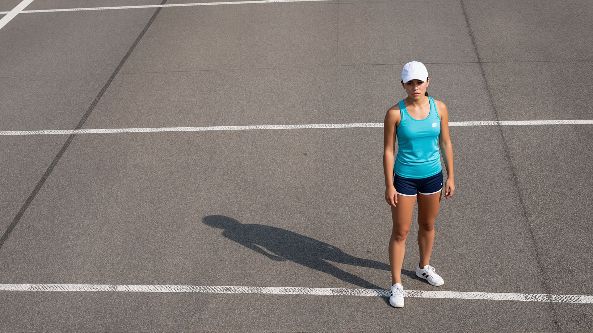

Files and galleries
Link class, file, preset=link:download. Not every link-class block is playable. The refinement comes from the extension table a profile declares, and a destination that table does not recognise reads as file. The link family is the explicit don't embed; on a file destination the :download modifier is the natural spelling.


Image class, list form, with a gallery preset. The kind stays image; the preset is presentation.